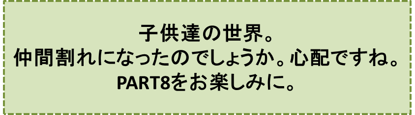

リンゴの木の神様とその弟子達-PART7-
『リンゴ並木のある日曜日』の巻
笠原正雄
日曜日の朝は大人達も子供達も
“今日はたっぷりリラックスしようね”
こんな思いがあるためでしょうか。ワクワク感が胸いっぱいに広がりますよね。
なかでも三郎達にとって、雲一つなく晴れ上がった青空にお日様が優しく輝く日曜日の朝は、この上もなく楽しい朝となります。
三郎達は、晴れた日は勿論雨の日も風の日も元気一杯手に手を組んで、軽やかにリンゴ並木に沿って歩いてきます。陽気に歌を唄い靴を鳴らしながら。
何故かと申しますと、子供達のリンゴは“リンゴの木の神様”がお取りになって、世界の貧しい子供達の喉を心地よく潤しているに違いない、などと想像するからです。
“♪♪リンゴの木の神様がとーられた♪♪”
と口ずさみながら、リンゴ並木に大きな輪を作って軽やかに踊ります。
“♪♪リンゴの木の神様がとーられた♪♪”
と調子をつけて歌い踊ります。
踊りつかれた彼らの喉をリンゴ達が心地よく潤してくれます。
“最高に美味しい！”
子供達は感謝の気持で一杯です。
日曜日の午前中はいつもこんな風にして、あっという間に過ぎてしまいます。
三郎達が陽気にリンゴ並木を立ち去った後、お昼ご飯を済ませた別のグループの子供達がやって来ます。
章介を先頭に、雄々しくも“リンゴ並木あらし”の一味とわたり合う少年探偵団よろしく、足並みをそろえ口もとを引き締め両腕を大きく振りながら……。
彼等は並木に到着すると、この上もなく緊張した面持で、被害状況の調査を始めます。
両手を後ろに組んでアニメ映画で見た兵隊さんのように、自信たっぷりの足取りでリンゴの木の周りをくまなく調べます。
章介達の努力も空しく、この日の午後もまた手懸かりになるようなものは、何一つ見出すことはできませんでした。
名探偵達はたちまち無邪気な被害者に早がわり。腹だたしげに足元の石ころをけりながら口々に叫びます。
“いまいましいなぁ。二つもやられている！”
“いや、五つもやられているよ。ほら、あの向うの一番高い所にあったでっかいのと、この枝の先になっていたリンゴも無くなっている！”
“あっ、本当だ。ちぇっ！”
章介は、立札にもたれかかりいらいらした調子で体を揺すぶりながら、口を開きます。
「きっと盗られたリンゴ達は、泥棒さんのリュックの中で寝ているだろうな。目が覚めてまっ暗な窮屈な所に閉じ込められているのを、不思議に思っているだろうなあ。可哀相に。人の心を持っていない鬼のような泥棒さんに食べられることもしらずにさ。こん畜生！」
この章介の言葉は、子供達の胸に強く突きささりました。ある者は腹を立ててリンゴの木の周りの土を、足でポンポン蹴って掘り返し、ある者は、盗られたリュックの中のリンゴ達を思って、涙が溢れそうになるのをそっとこらえたのでした。
子供達は散々不満を鳴らした後、章介を先頭に首うなだれて帰っていく。
……こんな姿を私達は想像してしまうかも知れませんね。
しかし、子供達の世界は子供達の世界。それに今日はせっかくの日曜日。彼らには楽しい午後の時間がいつも待っているのです。
期待通り、今日も皆の心をすっかり占領してしまう面白いやりとりが始まりました。
このやりとりは、ともに小学六年生のススムと三平の間で始まります。
ススムが最初にこうささやきます。
「ねぇ、君、ボク達のリンゴを盗ったのは登山に来る人達と思うかい？」
三平は、目を丸くしてススムの大胆な発言に驚き一杯の様子で
「勿論さ！」
と強い口調で応えます。
ススムは、すっかり覚悟を決めたという様子です。いつもの声で
「でもね。神様がお取りになったとしても、不思議なことではないと思い始めちゃったのさ。それで今朝、ボクは……」
ここまで言うと、ススムはすっかり話に夢中になってしまったのでしょう。沢山の「リンゴ会」の仲間達が、近くで聞き耳を立てていることも忘れて大きな声で話を続けます。
「ボクは今朝、教会の牧師さまに尋ねてみたんだ」
この言葉に、並木の子供達全員が二人をわっと取り囲みました。一言も聞き逃すまいと、耳をすまし目を輝かせながら……。
「おい！ 一体、何て尋ねたんだ！？」
と大きな声で怒鳴るようにして言ったのは、リンゴ会一番の力持ち、中学二年生の雄吉でした。この雄吉の声にススムは慌てて答えます。
「あのね。つまりこう言ったのさ。
“牧師様、ボク達のリンゴを神様が勝手にお取りになることがありますか？”
ってね」
“えっ！ よくもまぁ、そんな大胆な質問ができたものだ！”
子供達はススムの勇気に心の底から驚かされてしまいました。ススムの顔のどこかに、神様を罪人（つみびと）扱いにしたために、稲妻で焼いたような烙印が永遠に消えることのない強さで、押されているのではないか、とさえ思いました。
神様とお話をすることができると子供達が強く信じている牧師様に対して、罪深いことを言ってしまったのですから。
章介も雄吉も、いや、並木に集った子供達全てが、目を輝かせ頬を真っ赤に染めて、ススムの顔を覗（のぞ）き込みました。
ススムはすっかり興奮し、顔を上気させながら話を続けます。
「すると、牧師様は
“えっ！”
と叫んでね。とっても驚いてね」
ここまで聞くと、子供達はお腹（なか）を抱えて笑いこけてしまいました。
章介は笑いたくなるのをこらえながら、口を開きます。
「君、全く勇気の塊（かたまり）だなぁ、本当に。
牧師様は神様を盗人（ぬすっと）扱いされて、君の顔を思い切りぶっただろうね」
この言葉に、子供達はもう一度笑いこけます。
しかしススムは真剣です。
「とんでもない！ 牧師様はこうして体をこうして、ほらこのようにだよ、このように体を“く”の字に曲げて、ボクの顔を覗き込み優しく微笑みながらこうおっしゃったの。
“えぇ、勿論”
とね。そして直ぐこうおっしゃった。
“でも、神様はお取りになる以上に、あなた方にお与えになっていますよ。いつでも”
とおっしゃったのさ」
ここでとても空想好きな中学2年生の洋一郎が、口を挟みました。
「この前ね、ボク、素晴らしい夢を見たんだ。みんな聞いてくれる？
神様が、ボクに
“いいか、これ！ 私のすることを、よーく見ていなさいね”
とおっしゃって、手に持っていたゴムまりの一つには赤色を塗り、もう一つには青色を塗り、そして残りの一つには黄色に塗られて、ふうっと息をかけられた。
すると三つのゴムまりは、たちまち見事な赤リンゴ、青リンゴ、黄リンゴに早変わり。ボクが神様からいただいて、喜んで食べようと思ったとたん、ふっと夢から目が覚めちゃったの」
皆はにっこり笑い、
“食べ終わってから目が覚めたら良かったのに”
“続きを見れば、もっと面白かったのに”
“もう少し寝ていたらよかったのに”
と口々に同情しとても残念がります。
洋一郎は続けます。
「それでね。神様が夢の中で教えて下さったように、ゴムまりを赤く塗って枝につけておけば、神様は、お気づきになって、明日の朝までに、本物のリンゴにして下さると思うんだ。神様のお告げだよ、これは。
多分、ゴムまりは、世界一美味しいリンゴになる！ きっと美味しいリンゴになる！」
子供達は洋一郎の夢の効果を半分疑っていましたが、洋一郎は構わず話を続けます。
「ススムもさっき言ったじゃないか。牧師様が
“神様はお取りになる以上にあなた方にお与えになりますよ。必ず”
っておっしゃってたってさ」
洋一郎は、こう言い終わるとポケットに手をつっこみ、皆の顔を見回した後一大決心がついたとばかりに、真白なソフトボールぐらいの大きさのゴムまりと、チューブ入りの赤い絵の具絵筆、接着剤を手早く取り出しました。
工作お絵描きの得意な中学一年生の花子が割り込んできて、絵筆を器用に動かし、おリンゴそっくりさんを作ると強力接着剤で枝にうまく取り付けました。
何枚もの緑の葉が新入りのリンゴそっくりさんを
“いらっしゃーい”
というように覆っています。
葉っぱの間からお日様が優しく当っています。よほど注意深い人でない限り、この偽のリンゴに気付かないでしょう。それ程に、ゴムまりのリンゴそっくりさんはすばらしい出来映えです。
子供達はこれを見るともう元気一杯。リンゴの木の周りで手を叩きぴょんぴょん飛び跳ねて踊ります。
ここで、このお話からは、ほんの少し、道草をさせていただきましょう。
そしてたっぷり“想い”を巡らして、このお話とは全く別の世界想像の世界に飛び込んでみましょう。
ちょっぴり、お話中断です。
♪♪♪ 想像の世界にどうぞ！ ♪♪♪
第一幕
理屈っぽい大人達が、先程からの“ゴムまりを使った偽リンゴ実験”の光景を眺めていましたら、大きなため息をついてこう嘆くでしょう。
“こんなにすばらしいリンゴ並木がすくすくと育っているではないか。沢山のリンゴが見事に実っているではないか。
リンゴ並木から見渡す限りの山々は息を飲む程美しく神々しい。
夏の日の太陽に輝く丘の草は目に染みる程に青く、そこを散りばめている赤、白、黄色の花達は乙女のように優しく美しい。そしてリンゴ並木の周りの澄み切った大気、青空。全てが君達のものなんだ！”
確かにそうですよね。全ての物がその姿を全く変えることなく、また変える必要もなく、そのままの姿で子供達の手を待っています。
小川は春になれば、ぴっか、ぴっか、輝いて、心の底から笑いながら流れます。子供達は、その笑い声に答えるように、小川の中に飛び込み魚達を追っかけます。お魚さんと遊びます。
丘の草が燃え立つばかりの若芽を出すと、彼らは翼が生えたように飛んでいき、その上で思いっきり跳ね回ります。
疲れ果てると草の上にゴロリと横になって、大の字。
大空を見上げると真っ白な雲が、青空を渡って行（ゆ）きます。子供らは手を延ばして雲を掴むでしょう。大気の中、手をゆっくり動かしているだけだけれど、しっかり雲を掴んでいます。
日の光をいっぱいに浴びると、子供達は眠気を追い払うのに、もう大変でしょう。
世の中のあらゆるものは本当に、子供達のお相手をするのにそのままの姿で良いのです。
河原の砂利（じゃり）もビンのかけらも、そのままで子供達のお相手です。
姿を変える必要は、全くありませんよね。
大人達は再び、
“君たちの育てたリンゴ達は、どこのリンゴよりも美味しく、見事な血色だ。こんなすばらしいリンゴ達が君達を待っているのに、どうしてゴムまりをリンゴに変えようとするのかな……？”
と、ため息をついて嘆くことでしょう。
しかし、子供達の世界は、子供達の世界。さぁ“想像の世界”、第二幕を覗（のぞ）いてみましょう。
第二幕
もしも翌日の早朝、ゴムまりが首尾よくリンゴに変わっていたら、子供達の胸は、大きな喜びに弾（はじ）けるでしょう。
しかし、間もなくこのリンゴを取り合って喧嘩が、始まることでしょう。
力自慢の雄吉かあるいはすばしっこい三平のどちらか、多分雄吉がそのリンゴをひったくるようにして手の中に納め、
“かぶりっ”“かぶりっ”
と音を立てて、
「あぁ美味しい。こんな美味しいリンゴは今まで食べたことがない！」
と得意顔で食べることでしょう。そういう態度をとることは子供達の世界では許される、勝利者にとっての当然の権利なんですね。
しかし子供達も決して負けてはいません。勝利者、雄吉が食べ終わるのを待ってこうはやすでしょう。
「わーい。リンゴは、きっと、お腹（なか）の中で、ゴムまりに戻っているぞ！ そのうちにピョンピョン、お腹の中で跳ねだすぞ。わーい、わーい」
得意満面だった雄吉は、この言葉を真（ま）に受けて、
“痛い！”“痛い！”“痛い！”
と哀れみを誘う声で、皆に訴え始めるでしょう。
ゴムまりのリンゴ作りを提案した洋一郎は、この事態に責任を感じリンゴを一人占めにした天罰が、雄吉に当ったに違いないと思って
「誰かお医者さまか牧師さまを呼びに行っておくれ！」
と叫ぶことでしょう。
♪♪♪♪♪♪♪♪
さぁ、“想像の世界”から再び“現実の世界”に戻ることにしましょう。
勿論“現実の世界”と言っても、子供達の世界は子供達の世界。彼らはいつも想像の世界で遊びますよね。
今日も番外劇のような“現実の世界”がリンゴ並木に待っていたのです。
ゴムまり実験に興じる子供達の輪の外で、章介は立札にもたれかかり、
“ちっとも面白くないなぁ”
という顔で、一部始終を眺めています。
子供達が、ゴムまりのリンゴを仰ぎ見ながらぴょんぴょん飛び跳ね続けているのを見ると、もはや我慢の限界です。
胸を思い切り張って、すたすたと大股（おおまた）で偽リンゴの下へと進んで、大ジャンプ、
“えいっ”
と叫んでゴムまりのリンゴを一撃。
ゴムまりリンゴは、大砲から放たれた弾（たま）のように飛び出し、近くの立札を“ばーん”とばかりに一撃、とんぼ返りで跳ねっ返ってきます。
あぁ、なんと！ こともあろうに、跳ね返ってきた偽リンゴは章介を一撃。
そして、章介が今朝おろしたばかりの真白なセーターの背中に、べったり赤絵具の後を残しました。
あっけにとられて眺めていた子供達は、思いがけない結末にびっくり。
しかし気を取り直すと、今度は元気一杯に声を上げます。
“わーい。わーい。章介に天罰が当たったんだ！”
“せっかくのセーター、台無しだ！”
“わーい、わーい！”
と口々に叫びます。
子供達は、手を叩き、お腹を抱えて笑い始めます。
“わっはっはっ”“わっはっはっ”“わっはっはっ”
と心の底から笑います。
章介は最初、しかめっ面をし、子供達を睨みつけていましたけれど、つい皆の笑いにつられてしまって
“わっはっはっ”
と一緒に大声で笑います。子供達全員が声をそろえて笑います。
空は真っ青雲一つない晩秋の空。彼らはリンゴ並木に沿って元気一杯に走ります。
しかし、何人（なにびと）も、章介の背中を打ったゴムまりこそ、神の貴い懲らしめのムチだったと言ってはならないでしょう。そしてまた真白なセーターの上にべったりついた赤絵具の跡こそ神を冒涜したための報い、“烙印”と言うこともできないでしょう。
子供達の世界はいつも子供達の世界。大人達が覗（のぞ）き見ることができない世界です。思いがけないドラマが展開する世界です。
ガキ大将ナンバーワンとの誉れ高い章介は、大勢の仲間達の間で、今や羨望（せんぼう）の的となり、彼自身今まで経験したこともない幸せな感じが、胸一杯に広がっていくのを覚えています！
えっ、どうして？ どうしてでしょう？
リンゴ並木に沿って肩を組むようにして
“わっはっはっ”“わっはっはっ”“わっはっはっ”
と笑いながら走るうちに、章介の真白な新調のセーターは、子供達にとって何百カラットのダイヤモンドよりも、値打ちのあるものになってきたのです。
……と申しますのも、真っ白なセーターについている赤絵具の跡は、見れば見るほどリンゴに似てきて、ついに子供達は、一人残らずこのセータを一度は着てみたいと思い始めたのですから。
子供達は、章介を追っかけながら
“着せろ”“着せろ”“ボクにも着せろ”
と叫びます。口々に叫びます。
“いやだ”“いやだ”“このセータは、ボクの宝なんだ”
と叫びながら皆を何度も振り返り、並木に沿って元気一杯走ります。元気一杯走ります。
子供達の笑い声が並木一杯、広がります。
♪♪♪♪コーヒーブレイク♪♪♪♪
